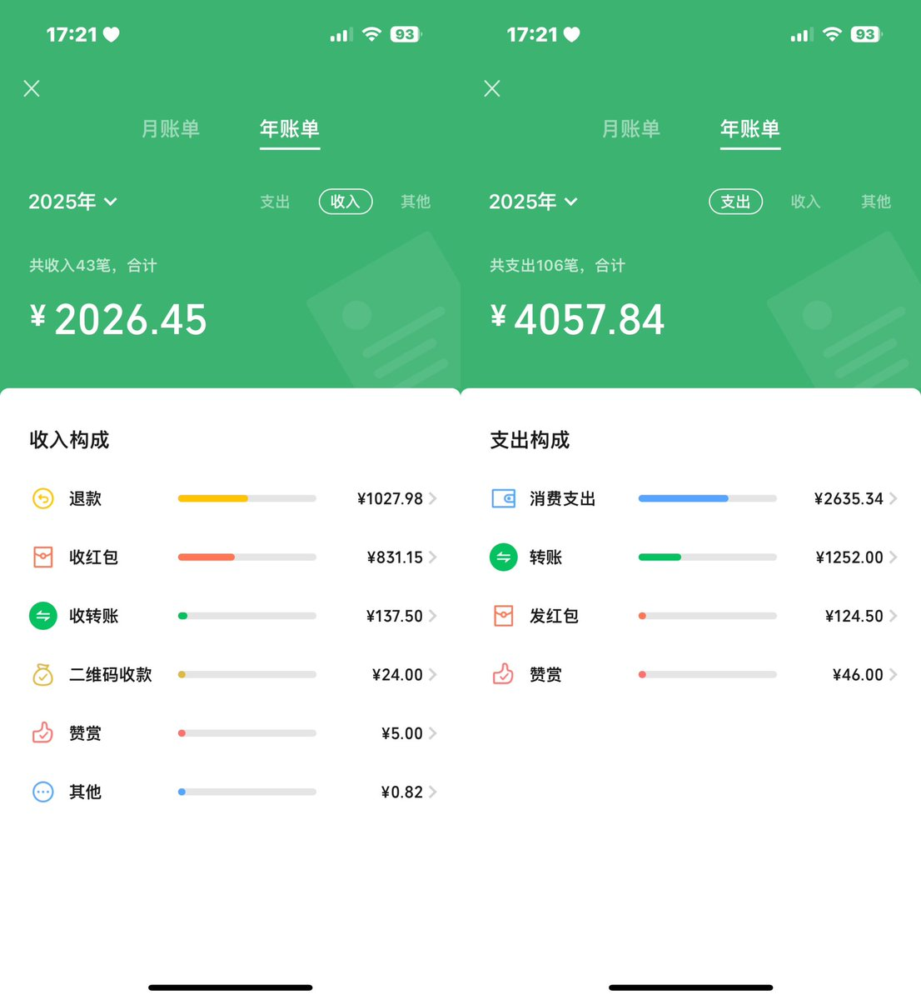
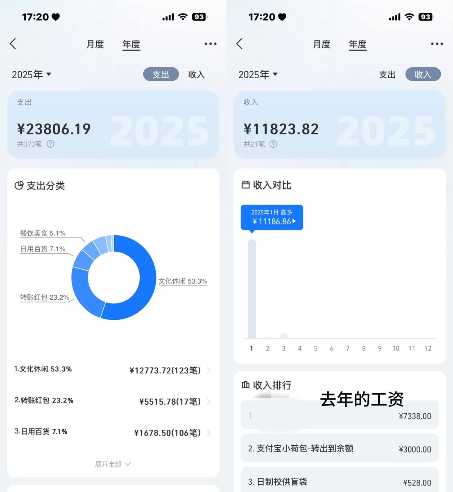

三生醇醪🍊
@3LifeStrongWine
@yuanyuan774 自己的想法很多，说的也很多，更让自己像个人不是吗，我觉得挺好的，


你是不是欠
@yuanyuan774
真的很害怕被误会，我只是嘴上爱说而已 现实中我真的很少和别人交流，网上我最多干的最出格的事就是擦边聊骚，我没有在卖…也没有立什么牌坊，我的钱都是我自己攒的，实际上收入都没有支出高，不想被误会，我这个人真的很容易焦虑，如果高强度的评论让你觉得很烦可以把我屏蔽掉🥺 https://t.co/1V5dU6a81j